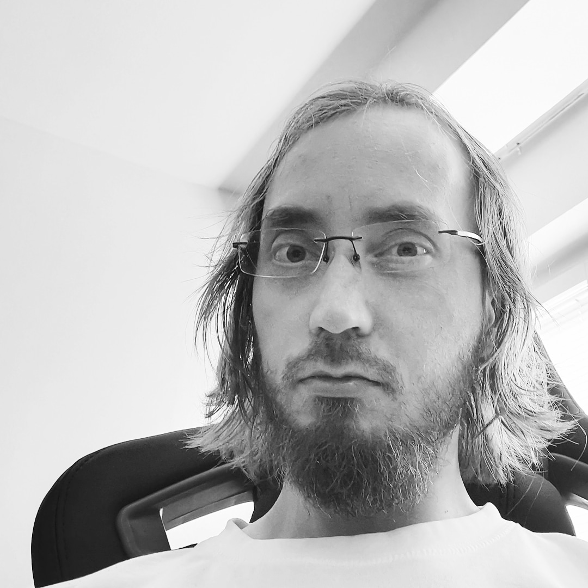

|  |
Sebastian Kaj-Joakim Landor
Ph.D. in medical science, M.Sc. in Biochemistry
I am a biochemist/cell biologist with 10+ years of experience in basic oncology research, with focus on Notch signalling in breast cancer and post-translational modifications (PTMs) of Notch. Special interest in PTMs, cancer immunotherapy,
and
aging research. Proficiency in most wet lab and microscopy techniques. A critical thinker inspired by technology and translational science, as well as lifespan and healthspan improvements.
|
Education
Ph.D. in Medical Science 2010-2016, Karolinska Institutet, Stockholm, Sweden
A 6-year Ph.D. program at Karolinska Institutet, Stockholm, Sweden, in Professor Urban Lendahl’s research group, sponsored in part by the EU-FP7 sponsored NotchIT Marie Curie fellowship. Ph.D.-thesis 2016: Notch in Cancer and Cancer Metabolism:
Six Degrees Of Intracellular Turbulence, ISBN 978-91-7676-349-0. Dissertation: Institute of Cell and Molecular Biology, Karolinska Institute on the 2nd of September 2016 with opponent Professor Jon C. Aster, from Harvard Medical School, Boston,
US.
M.Sc. in Biochemistry 2009-2010, Åbo Akademi
Master’s thesis in biochemistry from Professor Cecilia Sahlgren’s research group. Title: Notch in The Metabolic Landscape. Graduated with Laudatur (highest grade)
B.Sc. in Biochemistry 2009, Åbo Akademi
Bachelor of Science (B.Sc.) degree in biochemistry from Åbo Akademi. Title: Psoriasis at a Molecular Level, grade 4/5
Early education
2005: Basics of medicine course comprising 15 study weeks.
2004: Finnish matriculation examination (Upper-secondary final examination) The Pargas Svenska Gymnasium.
Work experience
| Year |
Position |
| 2017-2021 |
Post-doc researcher in Professor Cecilia Sahlgren’s research group at Åbo Akademi with focus on PIM kinase mediated Notch3 post-translational modifications. |
Skills
| Cell culture |
⭐⭐⭐⭐⭐ |
| Ectopic transfections |
⭐⭐⭐⭐⭐ |
|
| Western blotting |
⭐⭐⭐⭐⭐ |
| Microscopy |
⭐⭐⭐⭐⭐ |
|
| Programming |
⭐⭐⭐ |
| Science literacy |
⭐⭐⭐⭐⭐ |
|
Publications
- Sensitization of MCF-7 cells with high Notch1 activity by Cisplating and Histone Deacetylase inhibitors applied together
Anna Wawruszak, Jarogniew Luszczki, Marta Halasa, Estera Okon, Sebastian Landor, Cecilia Sahlgren, Adolfo Rivero-Müller, Andrzej Stepulak. MDPI. 2021 doi: https://doi.org/10.3390/ijms22105184 [Epub ahead of print]
- Pim-induced phosphorylation of Notch3 promotes breast cancer tumorigenicity in a CSL-independent fashion
Sebastian K.-J. Landor*, Niina M. Santio*, William B. Eccleshall, Valeriy M. Paramonov, Ellen K. Gagliani, Daniel Hall, Shao-Bo Jin, Käthe M. Dahlström, Tiina A. Salminen, Adolfo Rivero-Müller, Urban Lendahl, Rhett A. Kovall, Päivi J. Koskinen,
Cecilia Sahlgren. J. Biol. Chem.
2021 doi: https://doi.org/10.1016/j.jbc.2021.100593. [Epub ahead of print]
- Decoding the PTM-switchboard of Notch
Daniel Antfolk, Christian Antila, Kati Kemppainen, Sebastian K.-J. Landor#, Cecilia Sahlgren#
Biochim Biophys Acta Mol Cell Res 2019 doi: 10.1016/j.bbamcr.2019.07.002.
# Corresponding authors: Sebastian.Landor@abo.fi; Cecilia.Sahlgren@abo.fi
- Notch signaling promotes a HIF2α-driven hypoxic response in multiple tumor cell types
Anders P. Mutvei, Sebastian K.-J. Landor, Rhys Fox, Eike-Benjamin Braune, Yat Long Tsoi, Yee Peng Phoon, Cecilia Sahlgren, Johan Hartman, Jonas Bergh, Shaobo Jin, & Urban Lendahl. Oncogene 2018 doi: 10.1038/s41388-018-0400-3.
- The interplay between the cellular hypoxic response and Notch signaling
Sebastian K.-J. Landor, Urban Lendahl. Exp Cell Res 2017 doi: 10.1016/j.yexcr.2017.04.030. Epub 2017
- Selective regulation of Notch ligands during angiogenesis is mediated by vimentin
Daniel Antfolk, Marika Sjöqvist, Fang Cheng, Kimmo Isoniemi, Camille L. Duran, Adolfo Rivero-Muller, Christian Antila, Rasmus Niemi, Sebastian K.-J. Landor, Carlijn Bouten, Kayla J. Bayless, John E. Eriksson, and Cecilia Sahlgren. Proc Natl
Acad Sci. 2017 doi: 10.1073/pnas.1703057114. Epub 2017
- Keratins regulate colonic epithelial cell differentiation through the Notch1 signaling pathway
Iris A.K. Lähdeniemi, Julia O. Misiorek, Christian J.M. Antila, Sebastian K.-J. Landor, Lina E. Fortelius, Linda K. Bergström, Cecilia Sahlgren, and Diana M. Toivola. Cell Death Differ. 2017 24:984-996.
- Phosphorylation of Notch1 by Pim kinases promotes oncogenic signaling in breast and prostate cancer cells
Niina Santio*, Sebastian K.-J. Landor*, Laura Vahtera, Jani Ylä-Pelto, Elina Paloniemi, Susumu Y. Imanishi, Garry Corthals, Markku Varjosalo, Ganesh babu Manoharan, Asko Uri, Urban Lendahl, Cecilia Sahlgren and Päivi Koskinen (*=shared
authorship). Oncotarget 2016 10.18632/oncotarget.9215
- Loss of CSL unlocks a hypoxic response and enhanced tumor growth potential in breast cancer cells
Eike-Benjamin Braune*, Yat Long Tsoi*, Yee Peng Phoon*, Sebastian Landor, Helena Silva Cascales, Daniel Ramsköld, Qiaolin Deng, Arne Lindqvist, Xiaojun Lian, Shao-Bo Jin# and Urban Lendahl#. Stem Cell Reports 2016, May 10;6(5):643-51
- Inhibiting Notch activity in breast cancer stem cells by glucose functionalized nanoparticles carrying γ- secretase inhibitors.
Mamaeva V., Niemi R., Beck M., Özliseli E., Desai D., Landor S., Grönroos T., Kronqvist P., Pettersen I.K.N., McCormack E., Rosenholm J. M., Linden M., Sahlgren C. Mol Ther. 2016 May;24(5):926-36.
- Phenotypic Screening Identifies Protein Synthesis Inhibitors as H-Ras-Nanocluster-Increasing Tumor Growth Inducers.
Najumudeen A.K., Posada I.M., Lectez B., Zhou Y., Landor S. K.-J., Fallarero A., Vuorela P., Hancock J., Abankwa D. Biochemistry 2015 Nov 30. Biochemistry 2015 15;54:7212-21.
- Hypo- and hyperactivated Notch signaling induce a glycolytic switch through distinct mechanisms
Sebastian K.-J. Landor, Anders P. Mutvei, Veronika Mamaeva, Shaobo Jin, Morten Busk, Ronald Borra, Tove Grönroos, Pauliina Kronqvist, Urban Lendahl and Cecilia Sahlgren. Proc Natl Acad Sci USA. 2011. 108:18814-9.
A Warburg shakeup (Research Highlight)
Catherine Goodman. Nature Chemical Biology 8, 20 2012
- A Warburg shakeup (Research Highlight)
Catherine Goodman. Nature Chemical Biology 8, 20 2012
- Mesoporous silica nanoparticles as drug delivery systems for targeted inhibition of Notch signaling in cancer
Veronika Mamaeva, Jessica M. Rosenholm, Laurel Tabe Bate-Eya, Lotta Bergman, Emilia Peuhu, Alain Duchanoy, Lina E. Fortelius, Sebastian Landor, Diana M. Toivola, Mika Lindén and Cecilia Sahlgren. Mol Ther. 2011. 19:1538-46.
- Programming and web development
- Playing 7-string electric guitar
- Researching disruptive technologies eg. Blockchain
- Investing
- Weightlifting and sports
- Socializing
Contact Me